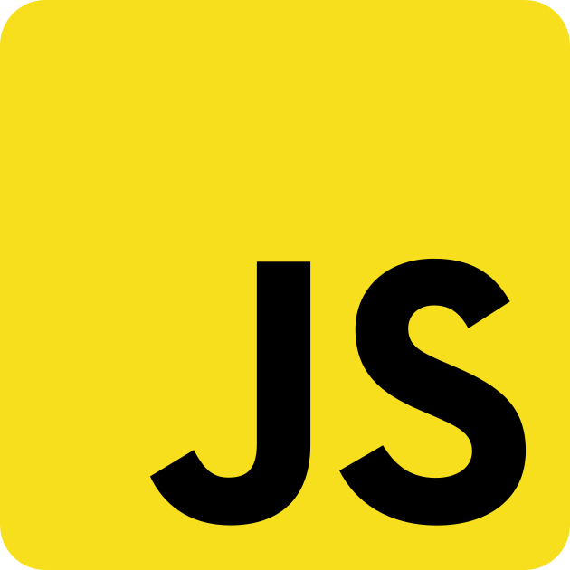

Test Automation with AI
Engineer your automated tests with AI.
Open source.

Integrates with your stack




Write tests in plain English
Alumnium uses AI to understand your natural language commands and translate them into reliable test actions. No more hunting for CSS selectors or dealing with flaky XPath expressions.
Natural Language Commands
Simply describe what you want to test in plain English. Tell Alumnium to "click the login button" or "fill out the registration form" and the AI handles the rest. No need to write complex selectors or wait for elements.
Self-Healing Tests
UI changes breaking your tests? Not anymore. Alumnium adapts to page structure changes automatically, understanding intent rather than rigid locators. Your tests stay stable even as your app evolves.
Multi-Platform Support
Test web apps with Selenium or Playwright. Test mobile apps with Appium. Same intuitive API across all platforms.
Python & TypeScript
First-class support for both Python and TypeScript. Use the language your team already knows and loves.
Smart Element Finding
Alumnium uses AI to intelligently locate elements based on context, accessibility attributes, and visual hints. It understands your UI the way humans do.
Built for Teams
Works seamlessly with your existing test frameworks and CI/CD pipelines. Easy for everyone to read and maintain.
Why Alumnium?
Traditional test automation is fragile and time-consuming. Alumnium uses AI to make your tests smarter, faster to write, and easier to maintain.
See Alumnium in Action
Watch how Alumnium transforms complex test scenarios into simple, readable commands. From web automation to mobile testing, Alumnium handles it all with natural language.
Simple and Powerful
Write test automation in a way that everyone can understand. No more brittle XPath expressions or complex waits. Just natural language commands that express what you want to test.
# Python example
from alumnium import Alumni
al = Alumni(driver)
# Navigate and interact
al.do("go to https://example.com")
al.do("click the login button")
al.do("fill out the form with email and password")
# Verify results
al.check("dashboard page is visible")
username = al.get("user name from header")Frequently Asked Questions
Everything you need to know about Alumnium and how it works
What is Alumnium?
Alumnium is an AI-powered test automation framework that lets you write tests using natural language commands. Instead of writing complex selectors and waits, you simply describe what you want to test in plain English, and Alumnium handles the rest. It works with popular automation tools like Selenium, Playwright, and Appium.
Which test frameworks does Alumnium support?
Alumnium works with:
- Selenium WebDriver for web automation
- Playwright for modern web testing
- Appium for iOS and Android mobile testing
You can use Alumnium with your existing test infrastructure without any major changes.
Do I need an AI API key?
Yes, Alumnium uses AI models to understand your natural language commands and interact with your application. You'll need an API key from supported providers like OpenAI, Anthropic, or other compatible AI services. Check our documentation for the full list of supported providers and setup instructions.
Is Alumnium free to use?
Yes, Alumnium is open source and free to use under the Apache 2.0 license. You can use it for both personal and commercial projects. However, you will need to pay for AI API usage separately based on your chosen AI provider's pricing.
How do I get started?
Getting started is easy:
- Install Alumnium via pip (Python) or npm (TypeScript)
- Configure your AI provider API key
- Initialize Alumnium with your existing Selenium, Playwright, or Appium driver
- Start writing tests using natural language commands
Check out our getting started guide for detailed instructions.
Can I use Alumnium with Claude Code?
Yes! Alumnium is available as an MCP (Model Context Protocol) server that integrates seamlessly with Claude Code. This lets you control browsers and mobile apps directly from your Claude conversations.
How stable is Alumnium? Can I use it in production?
Alumnium is currently in early development and experimental. While it's actively maintained and used by early adopters, we recommend starting with non-critical test suites and gradually expanding usage as you gain confidence. Join our community on Discord or Slack to share feedback and stay updated on new releases.